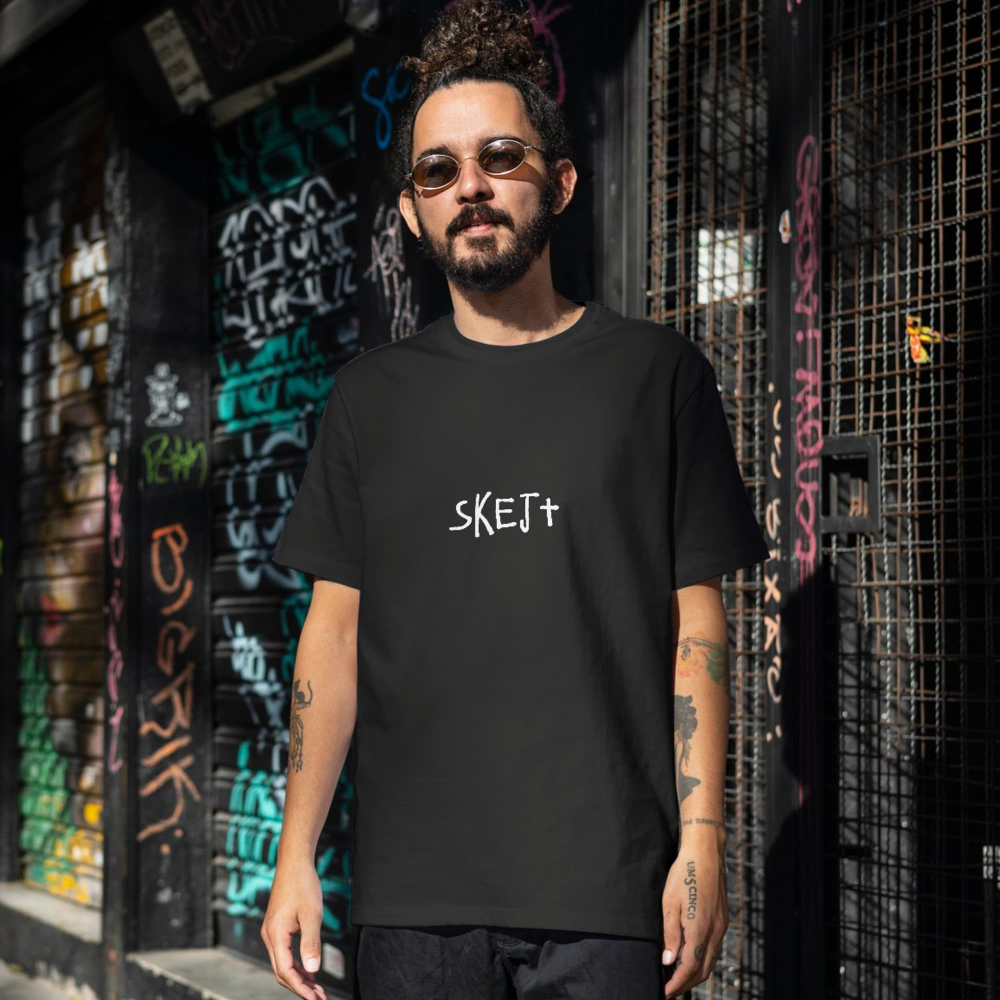
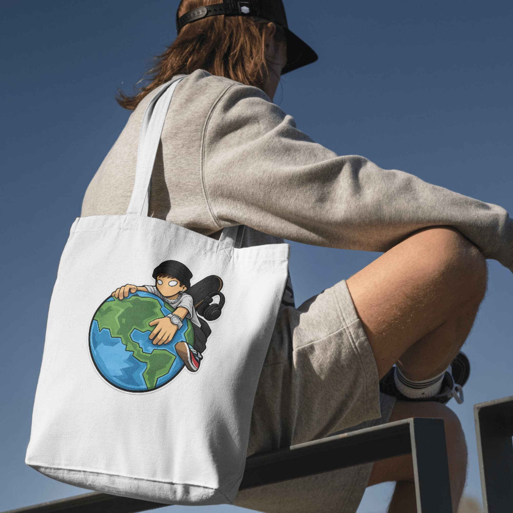

Skejt je brend inspiriran skate kulturom, ulicom i opuštenim načinom života. Nastao je iz jednostavne ideje - napraviti proizvode koji su jednostavni, zanimljivi i koje ljudi mogu nositi ili koristiti svaki dan. U ponudi su majice, kape, šalice i drugi proizvodi s dizajnom koji prati street stil i skate vibe. Skejt nije samo brend, nego i mali dio kulture koja potiče kreativnost, slobodu i izražavanje vlastitog stila.
Skejt se fokusira na jednostavne dizajne koji se lako uklapaju u svakodnevni stil. Cilj je ponuditi proizvode koji izgledaju dobro, ali su i praktični za svakodnevnu upotrebu, bilo da si u školi, na ulici ili s ekipom vani.
Iako je Skejt zamišljen kao mali brend, ideja iza njega je pokazati kako jednostavna ideja može prerasti u nešto prepoznatljivo. Brend predstavlja kreativnost, individualnost i slobodu da svatko pokaže svoj stil na svoj način.
